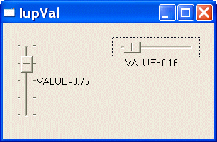

Creates the Valuator control. It allows creating a regulator similar to IupDial, but with well-defined limits. It inherits from IupCanvas.
Ihandle* IupVal(char *type); [in C] iup.val{type: string} -> (elem: ihandle) [in Lua] val(type) [in LED]type: Type of valuator. Can be "VERTICAL" or "HORIZONTAL".
The function returns the identifier of the created val, or NULL if an error occurs.
TYPE: Informs whether the valuator is "VERTICAL" or "HORIZONTAL". Vertical valuators are bottom to up, and horizontal valuators are left to right variations of min to max.
MIN: Contains the minimum valuator value. Default is "0".
MAX: Contains the maximum valuator value. Default is "1".
VALUE: Contains a number between MIN and MAX, indicating the valuator position.
STEP: Controls the increment for keyboard control and the mouse wheel.
PAGESTEP: Controls the increment for pagedown and pageup keys.
SHOWTICKS: Display tick mark along the valuator trail. The attribute controls the number of ticks. Minimum value is "3". Default is "0", in this case the ticks are not shown. The precision of the ticks are affected by the raster size of the control.
BGCOLOR: Controls the background color. The default value is the parent or the dialog background color.
RASTERSIZE: The default is "124x28" or "28x124". We recomend to leave this as the minimum size.
EXPAND: The default is "NO". The thumb will not expand if the valuator is expanded.
HANDLER_IMAGE: Handler image name. When defined the handle will not be drawn an this image will be used instead.
HANDLER_IMAGE_INACTIVE: Inactive handler image name. Used when HANDLER_IMAGE is used and the control is inactive.
MOUSEMOVE_CB: Called each time the user moves the valuator’s thumb keeping the mouse button pressed. The value of VALUE is passed as parameter.
int function(Ihandle *self, double val); [in C] elem:mousemove_cb(val: number) -> (ret: number) [in Lua]BUTTON_PRESS_CB: Called when the user presses the left mouse button over the valuator. The value of VALUE is passed as parameter. The thumb is always repositioned to the current mouse position.
int function(Ihandle *self, double val); [in C] elem:button_press_cb(val: number) -> (ret: number) [in Lua]BUTTON_RELEASE_CB: Called when the user releases the mouse button, after having pressed it over the valuator. The value of VALUE is passed as parameter.
int function(Ihandle *self, double val); [in C] elem:button_release_cb(val: number) -> (ret: number) [in Lua]
When the keyboard arrows are pressed and released, or the mouse wheel is rotated, the mouse press and the mouse release callbacks are called, in this order. If you hold the key down a mouse move callback is also called.
In these cases the value is incremented by 10% of the interval max-min.
